Rankoshi
Rankoshi · Hokkaido
Rankoshi
Highlighted on the Hokkaido map.
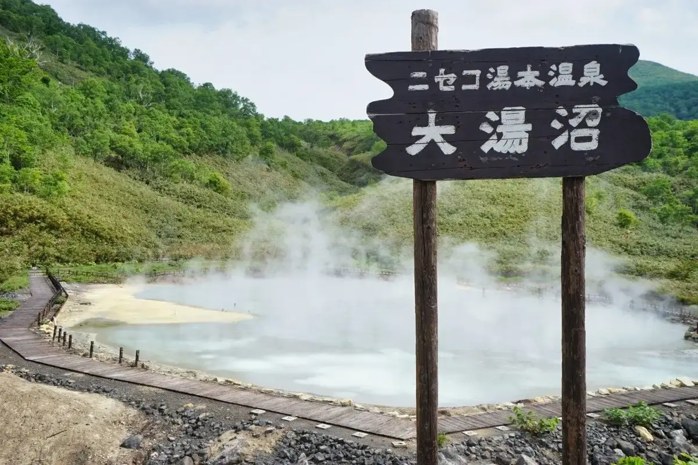
Stay
蘭越町ふれあいの郷とみおか
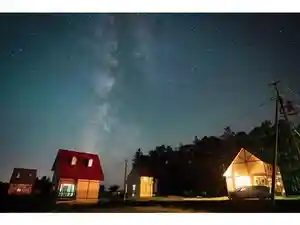
Rankoshi Machi Fureaino Sato Tomioka
清流
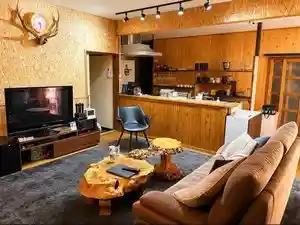
Seiryuu
日の出ランド
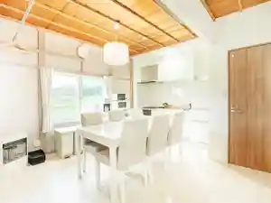
Hinode Rando
美雪
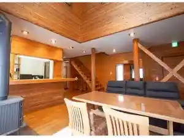
Miyuki
昆布川温泉 幽泉閣
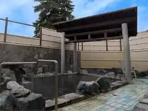
Konbu Kawa Onsen Yuu Izumi Kaku
蘭越町ふれあいの郷ひので
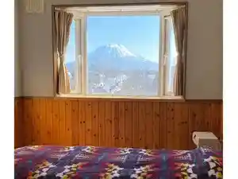
Rankoshi Machi Fureaino Sato Hinode
Field Tree
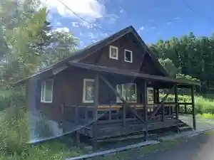
Field Tree
Niseko STREAM Villas
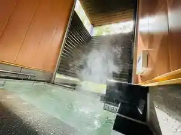
Niseko Stream Villas
月美の宿 紅葉音
Tsukimi No Yado Kouyou Oto
湯ごもりの宿 アダージョ
Yu Gomorino Yado Adaajo
Dining
一九蕎米
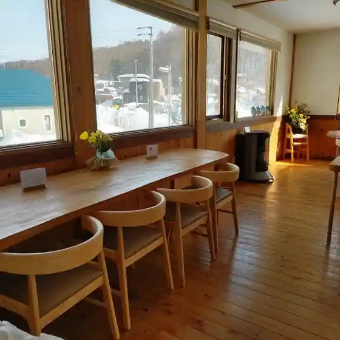
Ikku Kyou Kome
セイコーマート 蘭越中央店
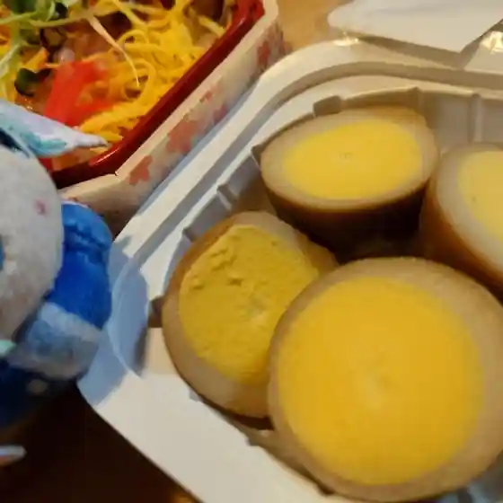
Seikoomaato Rankoshi Chuuou Mise
SLOTH BREAD

Sloth Bread
KAMAKURAチキンBBQ
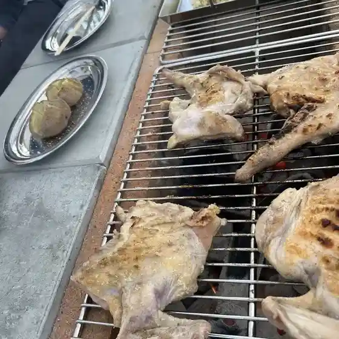
Kamakura Chikin Bbq
蘭越町交流促進センター 雪秩父
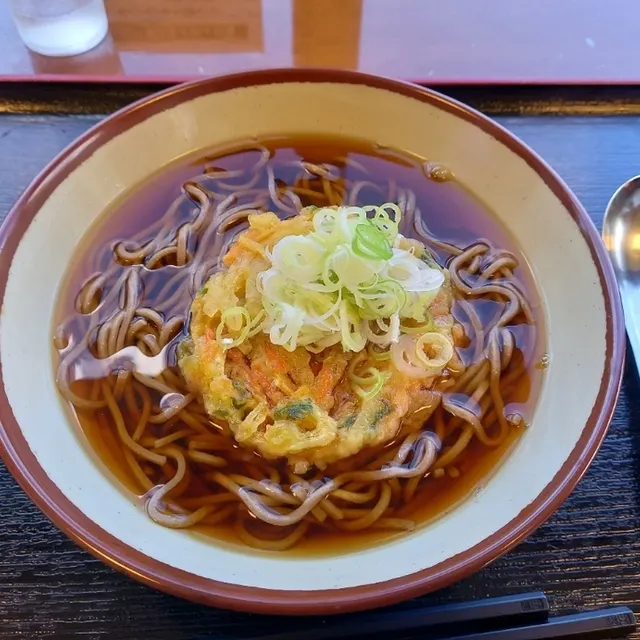
Rankoshi Machi Kouryuu Sokushin Sentaa Yuki Chichibu
黒川農場 直売店

Kurokawa Noujou Chokubai Mise
梅寿司
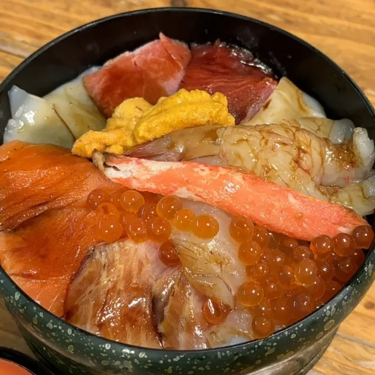
Baiju Tsukasa
街の茶屋レストラン ぼん田
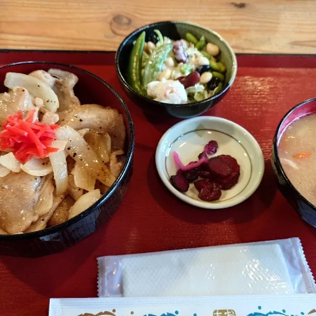
Machi No Chaya Resutoran Bon Ta
麺処 ほう龍
Men Tokoro Hou Ryuu
食事と酒処 喜楽
Shokuji To Sake Tokoro Kiraku
湯ごもりの宿 アダージョ
Yu Gomorino Yado Adaajo
Aマート 蘭越店
A Maato Rankoshi Mise
けらぴりか
Kerapirika
福助や
Fukusuke Ya
永澤商店
Nagasawa Shouten
道の駅 らんこし･ふるさとの丘
Michi No Eki Rankoshi Rankoshi Furusatono Oka
鍼灸治療院ひすい
Shinkyuuchiryou In Hisui
松原農園
Matsubara Nouen
レストラン キースプリング ニセコ
Resutoran Kiisupuringu Niseko
セイコーマート 蘭越店
Seikoomaato Rankoshi Mise
カフェ 54 ランコシ
Kafe 54 Rankoshi
こびと
Kobito
道の駅 シェルプラザ・港
Michi No Eki Shierupuraza Minato
ドライブイン みなと
Doraibuin Minato
Sights
Oyu Numa
Oyu Numa